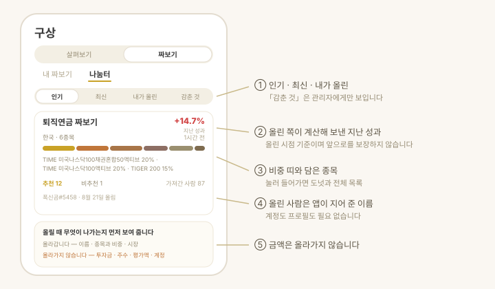

| 세그먼트 | 무엇을 |
|---|---|
| 내 조합 | 내가 만들어 둔 조합. 여기서 새로 짜고, 고치고, 내 자산에 넣습니다 |
| 나눔터 | 남이 짜 본 조합. 마음에 들면 내 조합으로 가져옵니다 |
2.0에서 세그먼트 중첩을 걷어냈습니다. 전에는 「구상」 안에 「살펴보기 | 짜보기」가 있고 그 안이 다시 「내 짜보기 | 나눔터」로 갈려 세그먼트가 3중으로 겹쳤습니다. 지금은 한 겹입니다 — 자산 탭의 「계좌별 | 항목별」과 같은 자리, 같은 모양입니다.
자산군 진단과 목표 제안은 뺐습니다(2.0). 목표 금액은 설정, 목표 비중과 그 차이는 자산 탭이 맡습니다 — 계획 탭이 어디로 갔는지에 적어 뒀습니다.
자산 정보가 기기 밖으로 나가지 않습니다. 주수 · 합성보수 · 지난 성과는 전부 앱 안에서 계산합니다. 밖으로 나가는 것은 종목을 찾고 시세를 받을 때의 검색어와 종목 심볼뿐입니다.
짜보기 — 아직 사지 않은 구성
1.3.0부터 쓸 수 있습니다. 2.0에서 탭 루트로 올라왔습니다.
지금까지 앱은 이미 가진 자산만 봤습니다. "나스닥100을 담고 싶다"까지 정해도 TIGER · KODEX · ACE · RISE 가 각각 내놓은 판이 있고 환헤지 · 커버드콜 형제까지 붙는데, 그것을 한자리에 놓고 볼 곳이 없었습니다. 짜보기가 그 자리입니다.
아직 실제 자산이 아닙니다. 내 자산에 넣기 전까지 화면에 "아직 내 자산에 없습니다"라고 붙어 있습니다.
1. 짜보기를 먼저 만듭니다
목록 아래의 새로 짜보기를 누르고 이름과 어느 시장에서 고를까요(한국 · 미국 · 둘 다)를 정하면 빈 짜보기가 생깁니다. 시장은 만든 뒤에 바꿀 수 없습니다. 종목은 그 자리에서 종목 담기로 넣어도 되고, 나중에 몇 번이든 더 얹어도 됩니다 — 나스닥100을 담은 뒤 다시 채권 · 배당을 더할 수 있습니다.
화면에서는 이것을 계좌라고 부르지 않습니다. 진짜 증권계좌가 아닌데 계좌라고 하면 헷갈리기 때문입니다. 내 자산에 넣기를 눌렀을 때 비로소 같은 이름의 계좌가 생깁니다 — 그 사실을 버튼 아래에 미리 적어 둡니다.
내 조합 세그먼트가 집입니다. 줄마다 비중 띠와 범례(다섯 줄까지), 그 아래 시장 · 예상 배당 · 총보수 · 종목 수가 한 줄로 붙고, 넣은 것에는 이름 옆에 내 자산에 넣음 배지가 붙습니다. 줄 동작 넷(이름 바꾸기 · 공유 · 복제 · 지우기)은 아이폰은 왼쪽으로 밀어, 안드로이드는 ⋯ 메뉴에서 꺼냅니다 — 플랫폼마다 표준이 다릅니다. 복제는 "같은 구성인데 환헤지 판으로도 해 보기"에 씁니다. 이름을 바꾸면 넣었던 표시가 사라집니다(이미 넣은 자산은 옛 이름 그대로 남습니다).
상세는 보기가 기본이고 편집이 모드입니다. 편집에서 [저장]을 눌러야 이번 편집분이 확정되고, 되돌리려면 시트를 아래로 쓸어내립니다. 지우더라도 내 자산에 이미 넣은 것은 지워지지 않습니다.
2. 종목을 찾습니다
찾기 화면은 ETF와 개별 종목 두 칸으로 갈립니다.
- ETF — 후보를 운용사별로 묶어 보여줍니다(TIGER → 미래에셋, KODEX → 삼성, ACE → 한국투자, RISE → KB …). 이름에서 유형 배지를 뽑아 답니다.
- 개별 종목 — SK하이닉스 · 테슬라처럼 낱개 종목을 담습니다. 운용사가 없으니 거래소별로 묶습니다(KOSPI · KOSDAQ · NASDAQ · NYSE). ETF는 이 칸에 안 나옵니다 — 옆 칸이 이미 찾고 있으니까요.
두 칸 모두 고르는 방식과 담는 길이 같습니다.
| 배지 | 뜻 |
|---|---|
| 환헤지 | 환율 변동을 상쇄하는 판 |
| 커버드콜 | 콜옵션을 팔아 분배금을 늘린 판 |
| 레버리지 · 인버스 | 지수 배수 · 반대 방향 |
| 월배당 | 분배를 다달이 |
| TR | 분배금을 재투자하는 판 |
3. 나란히 비교합니다
최대 다섯 개까지 골라 비교로 넘어갑니다. 항목이 행이고 ETF가 열입니다 — 아이폰에서는 옆으로 밀어서 봅니다(맥 · 아이패드는 한 번에 보입니다).
| 비교 항목 |
|---|
| 총보수 · 배당률 · 순자산 · 추적오차 · 기초지수 |
- 정렬은 보수 낮은 순 · 배당 높은 순 둘입니다. 앱이 점수를 매겨 줄 세우지 않습니다.
- 정확히 둘을 고르면 상위 구성종목이 얼마나 겹치는지도 냅니다. 원천이 상위 10종목까지만 주므로 전체 겹침이 아니라 그 범위 안의 값이고, 화면에 그 기준을 함께 적습니다.
- 기간을 골라 수익률 곡선을 겹쳐 봅니다.
- 표에서 바로 체크해 담기를 누릅니다. 담으면 비중이 균등하게 나뉘고, 편집에서 고칠 수 있습니다.
미국 종목은 원천에 추적오차가 없어 그 줄이 빕니다. 고장이 아닙니다.
4. 투자금을 넣어 봅니다
비중과 투자금을 넣으면 그 자리에서 계산합니다.
- 종목별 주수와 남는 현금
- 합성 보수 (그 값이 구성의 얼마를 덮고 있는지 함께 표시)
- 합성 섹터 비중 (정보기술 · 금융 … 큰 순서로)
투자금은 원화 하나로 받고 미국 종목은 현재 환율로 환산합니다(환율 기준을 화면에 적습니다). 시세나 환율을 못 받은 줄, 그 비중으로는 1주도 못 사는 줄은 이유를 줄마다 적어 줍니다. 금액 칸은 입력하는 중에 쉼표가 붙고 아래에 억 · 만 단위 한글 표기가 같이 뜹니다.
5. 지난 성과를 되짚습니다
상세의 지난 성과 — 이 짜보기였다면을 펼치면, 이 구성으로 그때 샀다면 어땠을지를 과거 시세로 되짚어 누적 수익률 · 연환산 · 최대 낙폭과 곡선으로 보여줍니다. 기간은 골라서 봅니다.
예측이 아닙니다. 이미 일어난 일을 이 구성에 맞춰 다시 계산한 값이고, 화면에도 그렇게 적혀 있습니다. 구간이 90일이 안 되면 계산하지 않고, 1년이 안 되는 구간은 연환산 수익률을 내지 않습니다.
6. 남에게 넘깁니다
상세의 공유하기에서 세 가지로 보냅니다. 나눔터에 올리는 것과는 다른 일입니다 — 이건 내가 고른 사람에게만 갑니다.
| 방법 | 내용 |
|---|---|
| 링크 | 누르면 앱이 열리고, 앱이 없는 사람은 웹 페이지에서 그대로 봅니다 |
| 코드 | v1.로 시작하는 짧은 글자. 받는 쪽은 짜보기 탭의 코드로 받기에 붙여 넣습니다 |
| 그림 카드 | 4:5 한 장에 비중과 지난 성과가 함께 들어갑니다 |
어느 쪽으로 보내도 투자금은 안 담깁니다 — 종목 · 비중 · 이름만 나갑니다.
시트로 뜨는 화면은 전부 아래로 쓸어내려 닫습니다(2.0) — 위쪽 손잡이가 그 길입니다. 「완료」·「닫기」 단추를 따로 두지 않습니다.
구성은 링크 주소의 # 뒤에 실립니다. URL 조각은 서버로 전송되지 않아 저장되지도, 접속 기록에 남지도 않습니다.
그림 카드는 글자를 눌러도 안 열리므로 실제로 눌리는 링크가 글로 같이 나갑니다. 나눔터에 올린 조합이면 그 조합 주소로 바로 가고(앱이 없어도 열립니다), 안 올린 조합이면 골고루 홈으로 갑니다. 공유하려고 몰래 올리지는 않습니다.
받은 쪽은 종목 이름까지 미리 보고 이름을 정해 내 짜보기로 저장을 눌러야 목록에 들어갑니다. 남이 보낸 코드는 앱이 곧이곧대로 믿지 않고 값의 범위를 다시 검사합니다.
7. 마음에 들면 내 자산에 넣습니다
내 자산에 넣기로 진짜 계좌를 만듭니다. 이 화면의 주된 행동이라 골드 채움 버튼이고, 나눔터에 올리기·공유하기는 테두리입니다.
- 사본이 갑니다 — 넣은 뒤에 짜보기를 고쳐도 자산은 따라 바뀌지 않습니다.
- 짜보기 이름 그대로 계좌 하나가 됩니다. 누르기 전에 그렇게 적어 둡니다.
- 한 번 넣은 것은 내 자산에 넣음으로 표시돼 두 번 넣는 사고를 막습니다.
- 시세를 못 받아 수량이 0이 된 줄은 들어가지 않습니다. 전 줄이 0이면 버튼이 아예 안 눌립니다 — 걷어내기만 하고 새로 넣는 줄이 없으면 어제 넣어 둔 자산이 사라집니다.
- 같은 이름의 계좌가 이미 있으면 이 기능이 넣었던 줄만 새 내용으로 갈립니다. 직접 입력한 자산은 그대로 남습니다.
나눔터 — 다른 사람이 짜 본 조합
1.4.0부터 쓸 수 있습니다. 2.0에서 세그먼트로 나왔습니다.

1.3.0의 공유는 링크를 아는 사람끼리만 오갔습니다. 나눔터는 모르는 사람의 짜보기를 발견하는 자리입니다. 짜보기 탭 위의 나눔터 세그먼트를 누르면 바로 나옵니다 — 화면을 밀고 들어가지 않으므로 되돌아올 것도 없습니다.
코드로 받는 길은 내 조합 아래의 코드로 받기 버튼입니다. 둘 다 남의 조합을 받는 일이지만, 하나는 목록을 둘러보는 것이고 하나는 받은 글자를 붙여 넣는 것입니다.
게시판이 아닙니다. 올라가는 것은 글이 아니라 짜보기 하나입니다.
| 올라갑니다 | 올라가지 않습니다 |
|---|---|
| 종목과 비중 | 투자금·주수·평가액 |
| 짜보기 이름 | 본문·댓글·사진 |
| 시장 구분(국내·미국·둘 다) | 계정·이메일·기기 정보 |
올린 사람은 돌돌이#4821 같은 이름으로 보입니다. 직접 짓는 이름이 아니라 앱이 기기에서 만들어 붙이는 것이라, 아무 말이나 적어 올릴 수 없습니다.
보고, 가져오고, 신고합니다
- 보기 — 왼쪽의 보기(전체 · 내가 올린)와 오른쪽의 정렬(추천순 · 최신순), 드롭다운 둘로 고릅니다. 세그먼트는 위의 갈래 하나뿐입니다. 조합을 누르면 종목 비중, 노출 · 분산 도넛 둘(국가 · 자산군), 「지난 1년」 성과가 나옵니다. 받기 전에 무엇에 얼마나 걸리는지 보고 정할 수 있습니다. 전부 올린 시점의 값이며 앞으로를 보장하지 않습니다.
- 가져오기 — [내 조합으로 가져가기]를 누르면 링크로 받았을 때와 같은 확인 화면이 뜹니다. 저장을 눌러야 내 목록에 생기고, 자산에는 자동으로 안 들어갑니다. 이미 내 목록에 있으면 버튼이 내 목록에 있어요로 바뀝니다.
- 올리기 — 내 짜보기 상세의 [나눔터에 올리기]. 무엇이 올라가고 무엇이 안 올라가는지 먼저 보여 드립니다. 하루 세 개까지 올릴 수 있고, 내가 올린 것은 언제든 내릴 수 있습니다.
- 신고 — 부적절한 조합은 신고할 수 있고, 여러 사람이 신고하면 목록에서 사라집니다.
앱이 없어도 볼 수 있습니다
사람들이 짜 본 조합에서 앱 설치 없이 바로 봅니다.